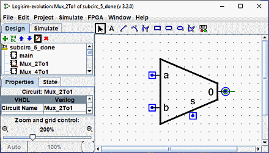
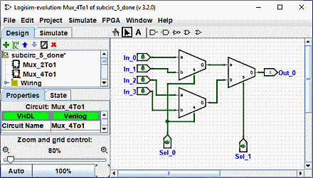
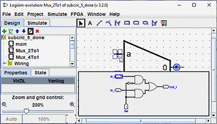

上一节: 编辑子电路外观
自定义外观
默认外观非常有用，事实上 Logisim-evolution 已经存在很多年了，没有其他选择。 但是，如果您希望以不同的方式绘制子电路，则可以选择| 项目 |→| 编辑电路外观| ，Logisim-evolution 的界面将从常规的布局编辑界面切换到绘制电路外观的界面。 您还可以单击最右侧的图标 ( ) 在资源管理器窗格的上部工具栏中。
) 在资源管理器窗格的上部工具栏中。
下面，我们正在编辑 2:1 多路复用器的外观，以便使用通常的梯形而不是矩形来绘制它。

2:1 多路复用器的外观如上所示，4:1 多路复用器的布局将如下所示。

外观编辑器类似于传统的绘图程序，但有一些特殊符号用于指示绘图在放入电路布局中时如何工作。 这些特殊符号无法删除。
-
带有一条线的绿色圆圈，我们将其称为锚点。 (
 ) 每个子电路外观中只有一个锚点。 电路中的每个组件都有一个单点来标识其位置； 用户在创建新组件时会看到这一点：鼠标单击仅标识一个位置，并且组件相对于该位置放置（通常主输出位于鼠标位置）锚点标识鼠标相对于整个绘图的位置 子电路已创建。
) 每个子电路外观中只有一个锚点。 电路中的每个组件都有一个单点来标识其位置； 用户在创建新组件时会看到这一点：鼠标单击仅标识一个位置，并且组件相对于该位置放置（通常主输出位于鼠标位置）锚点标识鼠标相对于整个绘图的位置 子电路已创建。
锚点还标识外观的朝向，如锚点线从其圆所指向的方向所示。 将子电路放入布局时，用户可以更改子电路的朝向； 锚点的朝向指示外观的朝向。 在我们的示例中，锚点面向东，Mux_4to1 中的子电路的每个实例也面向东，因此它们都以与 Mux_2to1 外观。
-
蓝色圆圈 (
 ) 和 带点的正方形 (
) 和 带点的正方形 ( ) 它们是子电路的
) 它们是子电路的端口。
端口的数量与电路中输入和输出引脚的数量完全相同。 与输入对应的端口被绘制为正方形，而与输出对应的端口被绘制为圆形。 每个端口指示连接到电路中的电线如何对应于布局中的输入或输出引脚。
当您选择端口时，Logisim-evolution 将通过在窗口右下角弹出布局微型图来指示相应的引脚，相应的引脚以蓝色绘制。 当选择所有端口时，不会发生这种情况。

我们可以使用 Ctrl+鼠标滚轮 或使用工作区左下角的放大镜按钮或滑块来更改图像的缩放比例。 显示费率。
工具栏包含用于添加其他形状的工具，如下所示。 某些键（Ctrl、Alt、Shift）会影响形状的绘制方式。 这些键可以相互组合。
Ctrl：对齐网格上的端点。
Shift：将线条定向为 45° 的角度倍数或使图形对称（正方形、圆角正方形、圆形）。
Alt：从中心绘制图形。
下面是每个工具的简短介绍

|
选择工具：选择、移动、复制、粘贴符号。 |

|
文本工具：添加、插入或编辑文本。 |

|
直线工具：创建一条线段。 |

|
曲线工具：创建二次贝塞尔曲线。 第一次单击并拖动指定线条的起点，第二次单击并拖动结束线条并设置曲率。 在线上单击会显示三个控制点。 Shift 并单击中心控制点施加对称曲线。 Alt 并单击中心点可通过控制点（在鼠标下方）绘制曲线。 |

|
折线工具 创建一系列连接线，每次单击都会开始一条新线。 双击结束序列。 |

|
矩形工具通过从一个角拖动到对角来创建一个具有圆角边缘的矩形或正方形（Shift）。 |

|
矩形工具通过从一个角拖动到对角来创建一个矩形或正方形（Shift）。 |

|
椭圆工具 通过从边界框的一个角拖动到对角来创建椭圆或圆形 ( Shift )。 |

|
多边形工具创建任意多边形，每次单击都会启动一个新面。 双击或Enter键或单击起始顶点即可完成 形状。 |

|
动态元件 放置动态元件 单击 打开一个窗口，用于选择子电路中的元件。 |
下一节: 调试子电路.